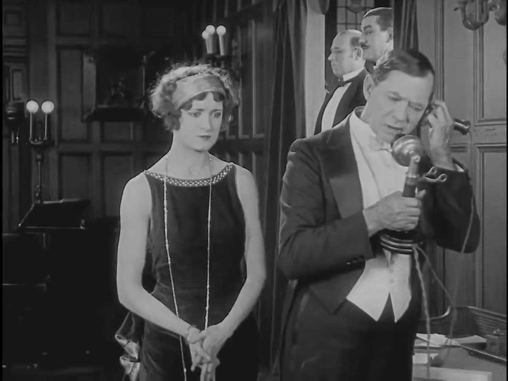

Movie Commentary Co-creation
让电影解说
成为共同创作。
在本地编辑器上传影片，和 AI 一起打磨文案、镜头、剪辑、配音与字幕。每一步都可以审阅和修改，最后得到一支真正属于你的解说视频。

Featured film · 1924福尔摩斯二世Sherlock Jr. · Buster Keaton
A finished example
从经典默片到中文解说
以 IMDb Top 250 电影《福尔摩斯二世》为示例，展示 MoCoCo 实际制作的成片。
原作：Buster Keaton，《Sherlock Jr.》(1924)，美国公有领域。查看原片与来源。示例由 MoCoCo 制作，文案和镜头经过人工复核，含中文解说与字幕。
44 分钟原片时长
中文解说配音与字幕
逐步可编辑从脚本到最终剪辑
Your creative workflow
六步，保留你的创作判断
01 / 设置
上传你自己的电影
在本地运行的编辑器选择影片，设定解说风格、语言和目标时长。
02 / 文案
写出你想讲的故事
从 AI 草稿开始，随时改写表达与结构。
03 / 镜头
找到合适的画面
根据文案检索片段，逐条确认镜头选择。
04 / 剪辑
调整叙事节奏
审阅时间线，改变片段次序和长度。
05 / 配音
赋予作品声音
生成旁白，也可以上传自己录制的声音。
06 / 导出
带走完整视频
输出带配音与字幕的成片，继续修改也很方便。
试试自己的电影
项目代码、安装步骤和本地网页使用方法都在 GitHub。